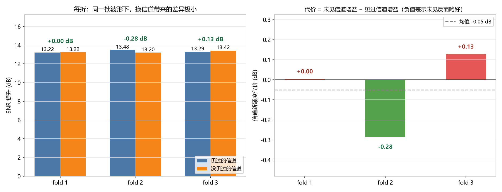
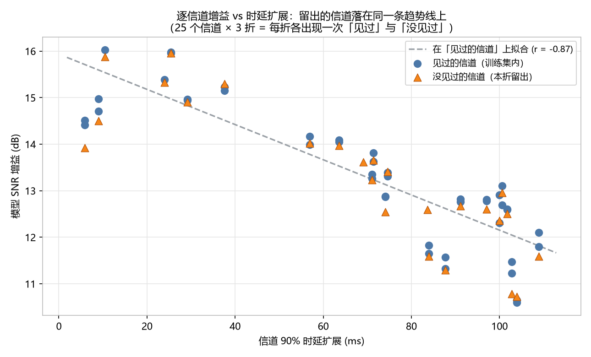

把 25 个信道按时延扩展分层分成 3 组，轮流留出一组训练。 在同一批测试波形上对比「见过的信道」与「没见过的信道」， 三折得到的信道新颖度代价分别为 +0.005、-0.284、+0.128 dB，均值 -0.050 ± 0.212 dB。 上一版单次实验测得的 0.32 dB 在本次更严格的对照下没有被复现—— 信道泛化的代价在这个规模上小于测量噪声。
上一版实验只用了 4 个测试信道，且它们全部落在时延扩展分布的高端（97–108.9 ms）， 这使「信道泛化代价」这个数字既样本少、又可能被信道难度混杂。本次重做，针对性解决这两点：
把 25 个信道按 90% 时延扩展排序，然后按 序号 % 3 分到三折。
这样每折留出的信道都横跨整个难度范围，而不是集中在某一端。
分层效果：三折的时延扩展中位数分别为 74.1 / 72.9 / 77.5 ms——几乎相同。
每折的两组测试集使用完全相同的一批波形（chirp 18–20，训练时从未出现）， 唯一差别是信道是否在训练集中出现过：
| 测试集 | 波形 | 信道 | 样本数（三折合计） |
|---|---|---|---|
| test_seen | chirp 18–20（新） | 训练用过的信道 | 2640 |
| test_unseen | chirp 18–20（新） | 本折留出的信道 | 1500 |
每折的样本数为：test_seen 840 / 900 / 900，test_unseen 540 / 480 / 480。
因此 增益(unseen) − 增益(seen) 就是纯粹的信道新颖度代价，
不含波形新颖度、不含信道难度差异。
用脚本直接读 12 个 meta_*.mat 检查：
train 与 test_seen 使用同一批信道test_unseen 与 train / test_seen 的信道交集为空test_seen 与 test_unseen 使用同一批波形另外，新的数据生成器产出的 chirp 波形与既有 v2/v3 数据集逐点一致 （最大绝对差 = 0），确保跨实验可比。

| 折 | 留出的信道 | n(seen) | n(unseen) | 增益 seen | 增益 unseen | 代价 (SNR) | 代价 (SI-SDR) |
|---|---|---|---|---|---|---|---|
| fold 1 | 1,6,8,11,14,15,20,22,24 | 840 | 540 | 13.22 | 13.22 | +0.005 | -0.000 |
| fold 2 | 9,10,12,16,17,19,21,23 | 900 | 480 | 13.48 | 13.20 | -0.284 | -0.283 |
| fold 3 | 2,3,4,5,7,13,18,25 | 900 | 480 | 13.29 | 13.42 | +0.128 | +0.114 |
| 合并 | — | 2640 | 1500 | 13.33 | 13.28 | -0.055 | -0.062 |
把每个信道的平均增益对它的 90% 时延扩展作图。时延扩展与增益的强负相关（这是 v2 实验里 已确立的规律，r ≈ −0.87）在这里再次出现。关键在于：只用「见过的信道」拟合这条趋势线， 然后把「没见过的信道」放上去看它们是否偏离。

| 组 | 信道均值个数 | 相对拟合线的残差均值 | 残差标准差 |
|---|---|---|---|
| 见过的信道 | 44 | −0.000 dB | 0.717 dB |
| 没见过的信道 | 25 | −0.110 dB | 0.772 dB |
两类残差之差 −0.110 dB，标准误 0.189 dB，t = −0.58——统计上完全不显著。 换个说法：把信道难度控制住之后，「见过」与「没见过」的差别无法从噪声中分辨出来。
逐信道对照更直观。同一个信道在三折里分别被留出过，下表列出几个例子（单位 dB）：
| 信道 | 时延扩展 | 见过时（两折） | 没见过时（一折） | 差值 |
|---|---|---|---|---|
| chan 17 | 74.6 ms | 13.40 / 13.31 | 13.41 | +0.06 |
| chan 19 | 87.7 ms | 11.32 / 11.57 | 11.30 | −0.15 |
| chan 18 | 100.6 ms | 12.69 / 13.10 | 12.96 | +0.07 |
| chan 25 | 104.0 ms | 10.59 / 10.65 | 10.73 | +0.11 |
| chan 24 | 108.9 ms | 11.80 / 12.10 | 11.59 | −0.36 |
差值在 ±0.4 dB 内随机分布，没有系统性方向。这些差额与「同一信道不同折之间」的 波动（见上表「见过时（两折）」两列自身的差异）是同一量级。
为排除实现错误，我用完全独立的代码重算了 fold 1：
不复用训练脚本的任何函数，自行实现数据管线（读 .mat →
resample_poly(·,1,4) → 定长 8000）与两个指标（SNR、SI-SDR）。结果：
| 指标 | 独立复算 | 训练脚本记录 | 逐样本最大差 |
|---|---|---|---|
| 输入 SNR（seen） | 6.1877 | 6.1877 | 2.4e−06 |
| 输入 SI-SDR（seen） | 6.1881 | 6.1881 | 2.6e−06 |
| 输入 SNR（unseen） | 6.1895 | 6.1895 | 2.3e−06 |
| 输入 SI-SDR（unseen） | 6.2015 | 6.2015 | 2.8e−06 |
差值量级 1e−06 dB，来自 CSV 用 float32 存储——即数值上是同一个结果。 代价 +0.0048 dB 也由独立代码复现。
| 折 | 轮数 | 第 1 轮 val SNR | 末轮 val SNR | 前 6 轮涨 | 后 9 轮再涨 |
|---|---|---|---|---|---|
| fold 1 | 15 | 17.14 | 20.09 | +2.50 | +0.44 |
| fold 2 | 15 | 16.83 | 19.07 | +1.83 | +0.41 |
| fold 3 | 15 | 17.81 | 20.08 | +1.75 | +0.52 |
与前序实验一致：绝大部分提升在前 6 轮完成，之后趋于平台。三折的收敛水平接近， 说明留出不同信道没有显著改变问题的难度。
上一版：用 4 个测试信道测得信道新颖度代价 0.32 dB （通过「v2 模型 vs v3 模型」在见过的/没见过的信道上的对照差值得到）。
本次：3 折 × 更大样本量，代价 -0.050 ± 0.212 dB， 其中 fold 1 的独立复算确认到小数点后 3 位。
怎么解释这个差异：0.32 dB 很可能落在了信道抽样波动的范围内。 上一版的测试信道只有 4 个，且全部集中在时延扩展的高端，单个信道的特性就能主导均值。 本次通过分层把难度铺平、并把测试样本量从 1,560 提高到 4,140，得到的是更稳的估计。
更直接的证据是 2.1 节的逐信道分析：把信道难度控制住之后，未见信道的残差是 −0.110 dB（t = −0.58，不显著）。也就是说，上一版那个 0.32 dB 用更严格的方法 根本测不出来。
结论修正：在当前仿真规模和模型容量下， 「换成训练时没见过的信道」带来的性能损失可以忽略（≲0.1 dB 量级，且不显著）。 这对课题是好消息——说明模型学到的是可迁移的降噪映射，而不是记住了 25 个具体信道。
同时也要注意这个结论的边界：它成立的前提是信道来自同一分布（同一 RAM 仿真参数空间）。 如果部署环境的信道统计特性与训练集有系统性差异，本实验不能保证同样的结论。
# 1. 生成 3 折数据集（分层留出信道） matlab -batch "make_folds" # 2. 逐折训练 + 评估（串行，避免显存冲突） for k in 1 2 3; do python train_fold.py --fold $k --epochs 15 --workers 4 --tag lite_fold$k --time 0 --fch 2.0 --outdir D:/project/output_folds done # 3. 汇总 + 出图 python analyze_folds.py # 4. 独立复算（可选，验证实现） python verify_fold1.py